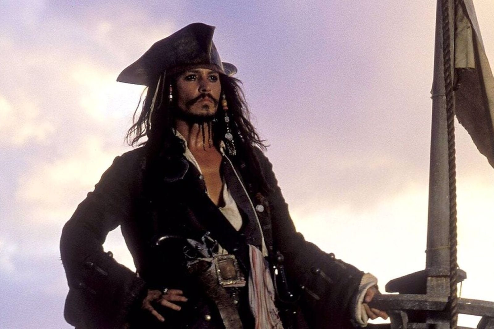

¿Qué es Piratas del Caribe?
Piratas del Caribe es una saga de películas que transcurre hasta
ahora a lo largo de cinco películas, creadas por Disney.
La historia nos cuenta las aventuras de Jack Sparrow mientras surca
los mares en los que se encontrará otros piratas, monstruos marinos
y leyendas entre muchas otras cosas.
Personajes principales
Entre los personajes que el capitán Jack Sparrow se encontrará en su
camino destacan Elisabeth Swann que es la que desencadena la primera
aventura de Jack y Will Turner, que es el hijo de un supuesto
"marinero". También hay que destacar a dos de los enemigos más
queridos de la saga Héctor o mejor conocido cómo Barbosa que
posteriormente pasará a ser parte de la tripulación de Jack y Davy
Jones por su conmovedora historia con Calipso que es presentada cómo
la diosa del mar.
Curiosidades
La saga de Piratas del Caribe está llena de curiosidades e
incongruencias que veremos a continuación.
La primera película se estrenó el 9 de Julio de 2003 con un
presupuesto de 140.000.000$ recaudando más de 600 millones de
dólares, también fue nominada a 5 premios oscar. Esta película está
basada en uno de los parques temáticos de Disney, en algunas de las
escenas podemos ver representaciones de las atracciones por ejemplo
la escena del perro y la carcel. En dicha saga el actor principal
Johnny Depp tenía un tatuaje que distinguía a Jack Sparrow, al
principio este sería falso pero el actor terminó haciendoselo en
honor a su hijo llamado Jack. En una escena el monito llamado Jack
hizo una mueca que fue pura casualidad pero que le dio un toque muy
cómico a esta parte La famosa canción que cantan en la película 1
también es del parque y de hecho es su tema principal. Debido al
éxito de la primera película es que se decidió sacar su secuela, la
cual ganó un oscar como los mejores efectos visuales. Aunque los
villanos que nos representan en las diversas pelis sean "monstruos"
en realidad los verdaderos enemigos de la saga es la marina y el
poder de la corona británica.
Como ya hemos visto piratas del caribe tiene muchísimas
curiosidades. Pero a su vez también cuenta con muchos errores. El
primero que podemos ver es en La maldición de la perla negra, cuando
el capitán Jack Sparrow intenta escapar, los pistoleros ingleses
empiezan a disparar de forma continua pero los rifles de la época en
la que están orientadas las películas no podrían hacer eso ya que
los rifles de repetición serían creados posteriormente. También hay
que recalcar el momento en el que el navío de Davy Jones y Sparrow
tienen un encontronazo y Davy Jones bombardea la perla y parece que
este no sufre ni un solo daño como si fuese irrompible. Muchos
errores que pasan desapercibidos son la aparición y desaparición de
elementos, un ejemplo es cuando Jack y Will están peleando en la
herrería hay un momento en el que la espada de Will desaparece por
un segundo y de la nada vuelve. Otro error esta vez más apreciable
es cuando Jack y Will utilizan un bote para llegar a un navío pero
esto es imposible ya que un bote dado la vuelta debajo del mar
flotaría.
En este apartado hemos podido ver muchas curiosidades y errores que
ha tenido esta saga, y aunque no son todos ya que hay un sinfín.
Aquí recogemos los más importantes
Escucha una de las melodías de la saga.